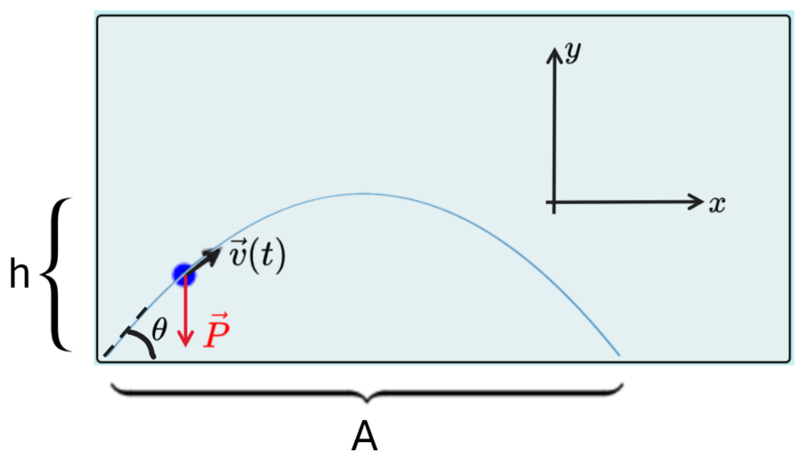

Estudo do movimento sob ação do campo gravitacional: lançamento de projétil.
Para você refletir
Objetivos
Roteiro do experimento
Para determinar o ângulo em que o alcance é máximo, pode-se realizar o lançamento para diversos ângulos θ diferentes e medir os diferentes alcances. Pode-se construir um gráfico
O que pode-se concluir do experimento acima?
Explicação teórica
Analiticamente, podemos construir uma solução para o alcance utilizando os conceitos de cinemática aprendidos no Ensino Médio: a função horária da velocidade e da posição. Podemos decompor os movimentos em horizontal, onde a aceleração é nula e, portanto, essa componente descreve um movimento retilíneo uniforme (MRU), e vertical, onde a aceleração é diferente de zero e o movimento é uniformemente variado (MUV). Primeiro, vamos encontrar uma expressão para o alcance. Como trata-se de uma medida horizontal, vamos utilizar as ferramentas do MRU:

Para descobrir o alcance, portanto, precisamos do tempo de vôo T. Esse tempo é determinado pela descrição vertical do movimento. Portanto, vamos utilizar as ferramentas do MUV nessa direção:
Substituindo este resultado na expressão do alcance:
Apesar de tanto o alcance como o tempo de percurso estar com o sinal negativo, o que não parece condizer com a realidade, mas a seguir veremos que o sinal da aceleração será negativo, fazendo com que tanto o tempo como o alcance tenham valores positivos, como esperado.
Para isso, teremos que fazer a análise da dinâmica da situação e utilizar a 2ª Lei de Newton. A única força que atua no objeto é a força gravitacional (ou força peso); portanto, essa é a força resultante na partícula. Também cabe observar que temos uma expressão para a força peso próxima à superfície terrestre
Vamos, então, utilizar a 2ª lei para determinar a aceleração:
Observa-se que a componente y da aceleração é -g (enquanto a componente x é zero). Substituindo na expressão para o alcance:
- Para responder ao primeiro item, precisamos verificar quando essa expressão é maximizada, ou seja, quando ela atinge o seu maior valor. Para isso, observamos que a função seno é limitada, ou seja, ela assume somente valores entre -1 e 1. No máximo, ela tem o valor 1. Para analisar o ângulo em que isso acontece, basta igualar o seno de theta a 1 e lembrar que o seno de um ângulo é igual a 1 quando o ângulo é de 90°. Assim:
- Consequentemente, conseguimos encontrar o alcance máximo igualando o seno a 1. Dessa forma, temos:
- Finalmente, para encontrar a altura máxima, precisamos utilizar a componente y do movimento. Para isso, vamos utilizar a função horária da posição e avaliar os pontos inicial e intermediário, este último onde o objeto atinge a altura máxima. Sabemos que esse ponto acontece na metade do caminho, tanto da trajetória quanto do tempo. Portanto, usando $t=T/2$ na função horária da posição, temos: